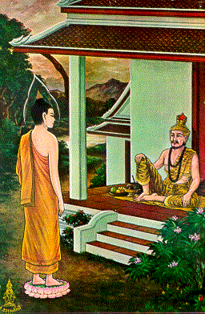
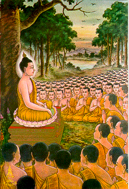

BuddhaSasana Home Page
This document is written in Vietnamese, with
Unicode Times font
| 21 | 22 |
|  |  |
| The Buddha gave a sermon on fire to
Uruvela Kassapa, Nadi Kassapa, Gaya Kassapa, as well as their 1000 disciples, and made
them all attain Arahatship. Ðức Phật giảng bài Kinh Lửa Cháy cho anh em Ca-diếp Uruvela, Nadi, Gaya, cùng với 1000 đệ tử của họ, sau đó họ trở thành đệ tử của Ðức Phật và đắc quả A-la-hán. |
On Magha Day, the Buddha gave
Ovadapatimokkha to 1250 monks, and summarized: "Not to do bad; to do good; purify
one's mind; these are the teaching of the Buddhas". Vào ngày Magha, Ðức Phật truyền Ðại Giới Bổn cho 1250 vị Tỳ kheo, và tóm tắt: "Không làm các điều ác; Gắng làm các điều lành; Luôn tu tâm tịnh ý; Chư Phật đều dạy thế." |
[Mục Lục][01-02][03-04][05-06][07-08][09-10][11-12][13-14]
[15-16][17-18][19-20][21-22][23-24][25-26][27-28][29-30][31-32]
Source: Post Cards from S. Dhumphakdi & Sons Publisher, Bangkok, Thailand